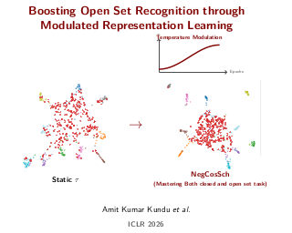
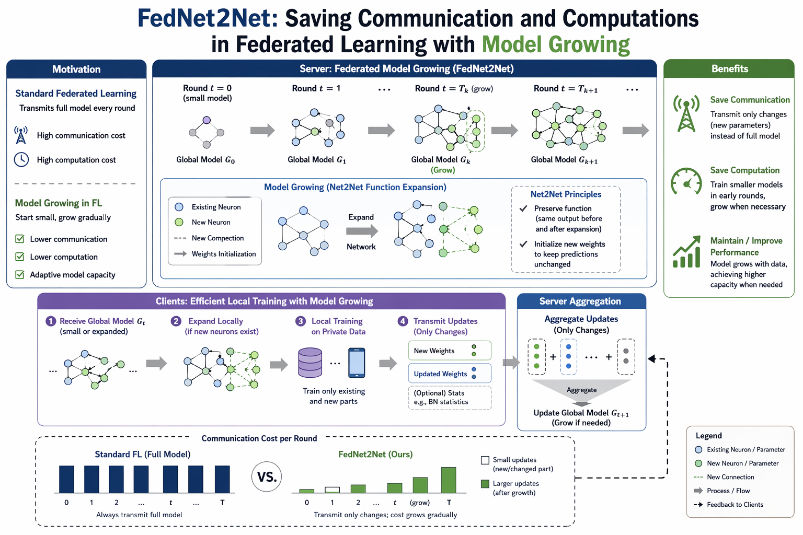
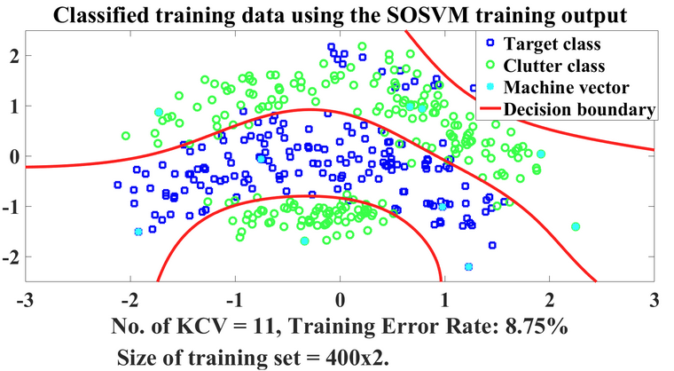

On the Job Market
I am actively seeking Research or Machine Learning Engineering roles starting April 2026. Please reach out to me!!
About Me
I am a final‑year PhD candidate in Electrical and Computer Engineering at the University of Maryland, College Park advised by Professor Joseph Jaja.
I am a dedicated researcher with 8 years of experience in comprehending the inner principles of representation learning in AI. I address challenges faced under changing environments in both fundamental and applied settings, such as healthcare.
My research spans the full pipeline of ML training, evaluation, and analysis using modern deep learning, computer vision, and visualization libraries. My core interest lies in developing methods for preparing AI models for dynamic environments for scalable, long-term applications.
My work has been published at machine learning Conferences and AI in healthcare journal venues including ICLR, ICANN, Computers in Biology and Medicine and IEEE Journal of Translational Engineering in Health and Medicine.
Education
-
PhD (Ongoing)
Electrical & Computer Engineering
University of Maryland, College Park
-
MS (2025)
Electrical & Computer Engineering
University of Maryland, College Park
-
BS & MS
Electrical & Electronic Engineering
Bangladesh University of Engineering and Technology, Bangladesh
Research & Technical Projects

Temperature Modulated Representation Learning for OSR
Fall '23 - Summer '25
Developed a novel temperature modulation scheme that improves overall representation learning across multiple loss families (cross-entropy, contrastive, prototypical). Effectively utilizes instance-specific and semantic features to boost closed-set accuracy by 1.87% and open-set AUROC by 3.3% without added computational cost.

AI Models for Mammography Screening Recall
Spring '24 - Fall '25
Developed AI models on large datasets, analyzing performance biases across demographic and clinical groups. Adopted a cumulative sum (CUSUM) approach for over-time drift detection. Achieved 3rd and 5th place on two test sets in the SBI-SPR-Kaggle competition.

Efficient Federated Training via Model Growing
Spring '20 - Spring '22
Developed "FedNet2Net," a scheme for enlarging model capacity with smooth knowledge transfer to reduce communication and computational costs at local clients. Explored knowledge distillation and transfer learning strategies for efficient knowledge sharing.

Advancing Caption Expansion in Vision Language Models
Fall '23
Evaluated CLIP, BLIP, and FLAVA on compositionality benchmarks. Designed metrics for quality and hallucination detection. Found VLM-based expanders (MiniGPT-v2) superior to LLMs (Llama-2).

Pruning-based Class Incremental Learning
Spring '22 - Fall '23
Analyzed pruning techniques to efficiently utilize model capacity for new tasks. Explored GAN, AC-GAN, VQVAE, and auto-regressive models for exemplar generation in incremental settings.



SOCP Approach for Linear SVMs
Fall '21
Implemented modified linear SVMs using Second Order Cone Programming (SOCP). Achieved optimized false positive/negative balances and constant training time relative to dataset growth.

Classical ML Models for Facial Recognition
Fall '20
Developed ML algorithms from scratch (Bayesian, KNN, SVM, PCA, Adaboost) for facial expression, pose, and illumination classification across three datasets.
Publications
For a full list of my work, please check my Google Scholar.
Boosting open set recognition performance through modulated representation learning.
A. K. Kundu, V. Patil, & J. Jaja
A bayesian non-parametric framework for learning disentangled representations.
V. Patil, S. Patil, M. Evanusa, A. K. Kundu, C. Fermuller & J. Jaja
Detecting and monitoring bias for subgroups in breast cancer detection AI.
A. K. Kundu, F. Doo, V. Patil, A. Varshney & J. Jaja
FedNet2Net: saving communication and computation in federated learning with model growing.
A. K. Kundu & Joseph Jaja
R. Karim, M. Hasan, A. K. Kundu, & A. A. Ave
A. K. Kundu, S. A. Fattah, & K. A. Wahid
A. K. Kundu, S. A. Fattah, & K. A. Wahid
A. K. Kundu & S. A. Fattah
Computational analysis to reduce classification cost keeping high accuracy of the sparser LPSVM.
R. Karim & A. K. Kundu
Efficiency and performance analysis of a sparse and powerful second order SVM based on LP and QP.
R. Karim & A. K. Kundu
Latest Updates
Experience
Doctoral Researcher
University of Maryland | College Park, MD | 2019 – Present
- Developing robust representation learning methods for data distribution changing scenarios, focusing on Open Set Recognition (OSR) and out-of-distribution detection to improve model reliability.
- Building deep learning models for healthcare while monitoring clinical performance and bias across demographic and clinical subgroups.
- Designing efficient training schemes, such as model growing for federated learning, and managing the full ML pipeline from data processing to statistical evaluation.
Graduate Teaching Assistant
University of Maryland | Fall 2020 and Fall 2021
Foundations of Machine Learning (Undergrad course), Statistical Pattern Recognition (Grad course).
Graduate Researcher
Bangladesh University of Engineering and Technology | Spring 2015 - Summer 2019
- Engineered least square saliency transformations and discriminant models to extract characteristic patterns from clinical images, improving classification accuracy and computational efficiency in medical imaging pipelines.
- Developed probability density function (PDF) based feature extraction schemes for the automatic detection of gastrointestinal diseases and bleeding in wireless capsule endoscopy videos.
Lecturer
Uttara University, Bangladesh | 2016 – 2019
Responsibilities: delivering lectures, conducting research, supervising projects.
Taught courses: Signals and Systems, Digital Signal Processing, Computer Programming, Microprocessor and Interfacing.
Awards & Recognitions
- ICLR Financial Award 2026
- Jacob K. Goldhaber Travel Grant, University of Maryland Graduate School 2026
- University of Maryland Institute for Health Computing Conference Travel Grant 2026
- Summer Scholarship, University of Maryland (UMD) Summer 2022
- Dean's Fellowship, University of Maryland Fall 2019- Spring 2020
- Dean's List Award, Bangladesh University of Engineering and Technology Multiple Semesters